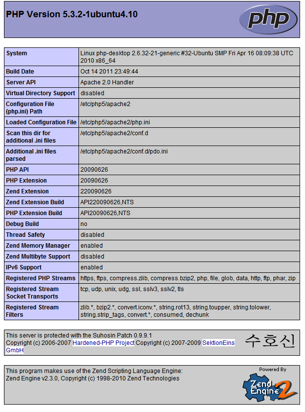
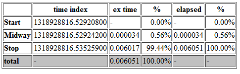
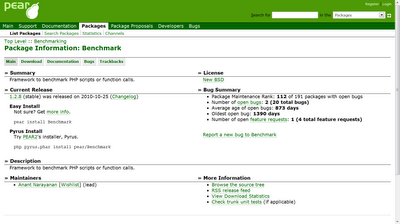

也紀念我們永遠的朋友 李士傑先生（Shih-Chieh Ilya Li）。
PHP extension management tools - Pecl and Pear
簡介

 PHP 從 1995 年發展至今已有十多年的歷史。因為學習門檻低，許多人在摸索一段時間後即可快速上手，PHP 就成為許多人第一次接觸 web base 程式設計時所使用的程式語言。隨著網路興起，越來越多程式語言加入 web base 的開發行列。其中，JAVA 程式語言因為擁有豐富的 API 可以直接套用在 JSP 及 Servlet 中，讓已經熟悉開發 JAVA 應用程式的程式設計師可以無痛轉移到 web base 的開發行列。而使用 Asp.Net 的開發者，也可以結合 C# 及 VB 等程式語言直接進行 web base 開發。
PHP 從 1995 年發展至今已有十多年的歷史。因為學習門檻低，許多人在摸索一段時間後即可快速上手，PHP 就成為許多人第一次接觸 web base 程式設計時所使用的程式語言。隨著網路興起，越來越多程式語言加入 web base 的開發行列。其中，JAVA 程式語言因為擁有豐富的 API 可以直接套用在 JSP 及 Servlet 中，讓已經熟悉開發 JAVA 應用程式的程式設計師可以無痛轉移到 web base 的開發行列。而使用 Asp.Net 的開發者，也可以結合 C# 及 VB 等程式語言直接進行 web base 開發。
面對其他程式語言的競爭，PHP 陣營提供了許多套件供開發者直接使用，Pear (PHP Extension and Application Repository) 的作者 Stig S. Bakken 於 1999 年底推出 Pear，目的是讓 PHP 的開發者能重複利用相同功能的元件，有效減少開發過程中繁雜的工作內容，進而達到事半功倍的效果。從 Pear 問世至今，除了 Pear 這套函式庫外，也發展了許多其他的函式庫，例如 CodeIgniter 及 Zend Framework 等。這些工具除了讓 PHP 開發者擁有多元的選擇性外，每個套件也各有其愛好者。
除了 Pear 外，還有 Pecl 的 PHP 擴展模組方式。兩者的不同之處在於，Pear 是純粹用 PHP 程式語言撰寫的擴展模組，而 Pecl 則是用 C 或 C++ 程式語言撰寫的。
事前準備
這篇文章的作業系統使用 Ubuntu，請讀者先行安裝 Ubuntu 再進行下列操作。以下是在 Ubuntu 作業系統內安裝 Pear 及 Pecl 的步驟。
請於命令列模式下輸入下列指令：
$ sudo apt-get install php5 php5-cli php-pear
php-pear 套件包括了 Pear 及 Pecl。
Pear - PHP Extension and Application Repository
- 安裝 Pear
除了先前介紹的 "php-pear" 安裝方式外，Pear 也可以經由下列方式安裝。請依序輸入下列兩行命令列即可安裝完成。
$ wget https://pear.php.net/go-pear.phar
$ php go-pear.phar
詢問相關設定資訊時，請 Enter 保持預設設定，即可安裝完成。
- Pear 使用範例
I. 列出頻道 (Channel) 清單
頻道 (Channel) 指的是 Pear 訂閱的套件清單來源。
請於命令列模式下輸入下列指令：
$ pear list-channels
====================
Channel Alias Summary
doc.php.net phpdocs PHP Documentation Team
pear.php.net pear PHP Extension and Application Repository
pecl.php.net pecl PHP Extension Community Library
__uri __uri Pseudo-channel for static packages
- 列出頻道的資訊
請於命令列模式下輸入下列指令：
$ pear channel-info pear.php.net
Channel pear.php.net Information:
=================================
Name and Server pear.php.net
Alias pear
Summary PHP Extension and Application Repository
Validation Package Name PEAR_Validate
Validation Package default
(略)
- 新增頻道 (Channel)
除了 Pear 官方提供的預設頻道外，還可以額外新增安裝的套件來源。例如知名的 PHPUnit 套件是建立於 "pear.phpunit.de" 頻道上。
因此，若要加入 "pear.phpunit.de" 的列表。請於命令列模式下輸入下列指令：
$ pear channel-discover pear.phpunit.de
除此之外，若已下載了頻道的 XML 資訊，也可以使用下列指令新增：
$ pear channel-add sample-channel.xml
- 更新頻道 (Channel)
訂閱的頻道內容可能已過時，若需要更新清單，以取得更新版的套件時，請於命令列模式下輸入下列指令：
$ pear channel-update [頻道名稱]
例如更新 "pear.phunit.de"，則：
$ pear channel-update pear.phpunit.de
若要更新所有的頻道，則：
$ pear update-channels
V. 移除頻道(Channel)
請於命令列模式下輸入下列指令：
$ pear channel-delete [頻道名稱]
例如移除 "pear.phunit.de"，則：
$ pear channel-delete pear.phpunit.de
- 列出已安裝的套件清單
安裝了 Pear 的電腦可以使用下列指令查詢目前已經安裝完成的套件清單：
$ pear list
▲ 圖1：pear list 的輸出範例
- 搜尋可安裝的套件清單
請於命令列模式下輸入下列指令：
$ pear search [套件的關鍵字]
例如，搜尋 Benchmark 相關的套件，則：
$ pear search benchmark
Matched packages, channel pear.php.net:
=======================================
Package Stable/(Latest) Local
Benchmark 1.2.8 (stable) 1.2.7 Framework to benchmark PHP scripts or function calls.
- 安裝套件
請於命令列模式下輸入下列指令：
$ pear install [套件名稱]
例如本文將介紹使用 Pear 套件來安裝 Benchmark_Timer，這是一套用來檢視網頁執行時間的工具。請於命令列模式下輸入下列指令：
$ pear install benchmark
除此之外，也可以指定安裝的版本。以 phpunit 為例，可以先列出所有 phpunit 的套件：
$ pear remote-list -c phpunit
接著，再從清單中選擇特定版本安裝：
$ pear install phpunit/package_name-1.0.0 # 安裝 1.0.0 的版本
$ pear install phpunit/package_name-beta # 安裝 beta 的版本
- 升級套件
升級前可以先查詢可升級的清單列表。請於命令列模式下輸入下列指令：
$ pear list-upgrades
確定升級的套件後，請於命令列模式下輸入下列指令：
$ pear upgrade [套件名稱]
例如升級已安裝的 Benchmark_Timer，則：
$ pear upgrade benchmark
若要一次升級所有已安裝的套件，則可以改用參數 "upgrade-all" 如下：
$ pear upgrade-all
X. 移除套件
請於命令列模式下輸入下列指令：
$ pear uninstall [套件名稱]
例如移除已安裝的 Benchmark_Timer，則：
$ pear uninstall benchmark
Pecl - PHP Extension Community Library
- 列出頻道 (Channel) 清單
頻道 (Channel) 指的是 Pecl/Pear 訂閱的套件清單來源。
請於命令列模式下輸入下列指令：
$ pecl list-channels
====================
Channel Alias Summary
doc.php.net phpdocs PHP Documentation Team
pear.php.net pear PHP Extension and Application Repository
pecl.php.net pecl PHP Extension Community Library
__uri __uri Pseudo-channel for static packages
- 列出頻道的資訊
請於命令列模式下輸入下列指令：
$ pecl channel-info pecl.php.net
Channel pecl.php.net Information:
=================================
Name and Server pecl.php.net
Alias pecl
Summary PHP Extension Community Library
Validation Package Name PEAR_Validator_PECL
Validation Package 1.0
(略)
- 新增頻道 (Channel)
除了 Pecl/Pear 官方提供的預設頻道外，還可以額外新增安裝的套件來源。例如 Pango 套件是建立於 "pecl.mgdm.net" 頻道上。
因此，若要加入 "pecl.mgdm.net" 的列表。請於命令列模式下輸入下列指令：
$ pecl channel-discover pecl.mgdm.net
除此之外，若已下載了頻道的 XML 資訊，也可以使用下列指令新增：
$ pecl channel-add sample-channel.xml
- 更新頻道 (Channel)
訂閱的頻道內容可能已過時，若需要更新清單，以取得更新版的套件時，請於命令列模式下輸入下列指令：
$ pecl channel-update [頻道名稱]
例如更新 "pecl.mgdm.net"，則：
$ pecl channel-update pecl.mgdm.net
若要更新所有的頻道，則：
$ pecl update-channels
- 移除頻道 (Channel)
請於命令列模式下輸入下列指令：
$ pecl channel-delete [頻道名稱]
例如移除 "pecl.mgdm.net"，則：
$ pecl channel-delete pecl.mgdm.net
- 列出已安裝的套件清單
已安裝 pecl 的電腦可以使用下列指令查詢目前已經安裝完成的套件清單：
$ pecl list
- 搜尋可安裝的套件清單
請於命令列模式下輸入下列指令：
$ pecl search [套件的關鍵字]
例如，搜尋 http 相關的套件，則：
$ pecl search http
Matched packages, channel pecl.php.net:
=======================================
Package Stable/(Latest) Local
pecl_http 2.0.0dev2 (devel) Extended HTTP Support
- 安裝套件
請於命令列模式下輸入下列指令：
$ pecl install [套件名稱]
例如安裝 "pecl_http"。請於命令列模式下輸入下列指令：
$ pecl install pecl_http
除此之外，也可以指定安裝的版本。可以先列出所有在 "pecl.php.net" channel 的套件：
$ pecl remote-list -c pecl.php.net
Channel pecl Available packages:
================================
Package Version
KTaglib -n/a-
FliteTTS -n/a-
Ovrimos -n/a-
radius 1.2.5
sasl -n/a-
PAM 1.0.3
(略)
接著，再從清單中選擇特定版本安裝：
$ pecl install pecl_http-1.7.1 # 安裝 1.7.1 版本
- 升級套件
升級前可以先查詢可升級的清單列表。請於命令列模式下輸入下列指令：
$ pecl list-upgrades
確定升級的套件後，請於命令列模式下輸入下列指令：
$ pecl upgrade [套件名稱]
例如升級已安裝的 pecl_http，則：
$ pecl upgrade pecl_http
若要一次升級所有已安裝的套件，則可以改用參數 "upgrade-all"如下：
$ pecl upgrade-all
- 移除套件
請於命令列模式下輸入下列指令：
$ pecl uninstall [套件名稱]
例如移除已安裝的 pecl_http，則：
$ pecl uninstall pecl_http
Pear: Benchmark_Timer 套件安裝範例
- 事前準備
我們將在 Ubuntu 作業系統內安裝 Apache2，以及先前已安裝的 PHP 5.3 和 Pear。接著安裝 Benchmark 套件，並撰寫簡單的程式碼來了解 Pear 的運作。
I. 安裝 Apache2
請於命令列模式下輸入下列指令：
$ sudo apt-get install apache2
- 安裝 PHP5
請於命令列模式下輸入下列指令：
$ sudo apt-get install php5 php5-cli php-pear
- 驗證網站伺服器安裝
為了要確定 Apache2 以及 PHP5 安裝正確，請先完成下列操作，以確認本機網站伺服器的安裝過程正確無誤。
請先透過下列指令編輯檔案，完成後請儲存檔案，除了 vi 之外也可使用自己熟悉的編輯器。
$ sudo vi /var/www/phpinfo.php
▲ 圖2：phpinfo.php 的內容
- Benchmark_Timer 使用範例
接著請使用瀏覽器開啟網址 "https://127.0.0.1/phpinfo.php"，正確執行以上設定即可看到類似下圖內容。
▲ 圖3：phpinfo.php 於瀏覽器上的顯示畫面
接下來請透過下列指令編輯檔案，完成後請儲存檔案，除了 vi 之外也可使用自己熟悉的編輯器。
$ sudo vi /var/www/benchmark.php
▲ 圖4：benchmark.php 的內容
最後在瀏覽器輸入網址 https://127.0.0.1/benchmark.php，即可看到成果如下，裡面的資訊包含了程式執行過程所需要的時間，而這些操作都是透過 Benchmark_Timer 這個類別完成，其中的 Benchmark_Timer 就是 Pear 的其中一個函式庫。
▲ 圖5：benchmark.php 於瀏覽器上的顯示畫面
除了 Benchmark 之外，讀者也可到 Pear 的函式庫頁面 ( https://pear.php.net/packages.php ) 查看，點選每個套件類別都有安裝說明及使用方式。
▲ 圖6：Pear 網站上的 benchmark 專案
結語
對於剛接觸 PHP 的使用者而言，查詢 PHP 官方網站的線上函式清單是練功的好方法。然而有些功能需透過一個以上的函式才能達成，例如本文所介紹的 Benchmark功能，也可以透過兩次的 timestamp 相差計算出來，加上些數學運算即可得到類似的功能。若經常要使用同樣的功能，相信許多人會將這些程式的內容包到一個類別中，當有需要時，只要宣告出一個新的物件即可。這是物件導向程式設計的優點，也是Pear 開發者所想要達成的目的之一。因此 Pear 為 PHP 開發者集結了許多套件，透過簡單的安裝過程即可馬上使用，輕鬆完成原本需要大費周章的工作。
對於有經驗的 PHP 開發者而言，Pear 提供的套件可以輔助開發過程所遇到的瓶頸。Pear 官方網站提供的套件數量相當龐大，每個套件都有相關的使用範例及說明文件，因此，PHP 開發者可以用像在 PHP 官方網站查詢函式使用說明的方式瀏覽 Pear 網站，透過本文簡單的介紹，相信各位能夠盡情遨遊在 Pear 的世界。
最後，PHP 官方目前希望逐步以 Pear2（第二代的 Pear）來取代舊有的 Pear，未來將以 pyrus 指令替換原本使用的 pear。第二代的設計上採用 "Phar"（類似於 Java 的 jar）的方式來包裝與管理擴展模組，而 "Phar" 僅於 PHP 5.3 及其後版本才有支援。此舉勢必影響到 PHP 版本間的相容性，但相對地也擺拖了部分歷史的沉重包栿。更多的介紹，請見 Pear 官方網站。
作者簡介
黃崇閔，現任職自由軟體鑄造場，擔任軟體工程師，喜歡透過自動化的程式，解決枯燥乏味的工作內容。
OSSF Newsletter : 第 186 期 程式語言延伸模組管理系統
Tags: PHP, Pecl, Pear, 延伸模組, extension management tools,
Category: Tech Column
Special


Address：No.128, Sec.2, Academia Rd., Institute of Information Science, Academia Sinica, Nangang District, Taipei City 11529, Taiwan (R.O.C).
Privacy Policy. Terms-of-use

Comments
$ pear channel-discover pear.phpunit.de
而不是
$ pear channel-discovery pear.phpunit.de
OSSF-ROCK